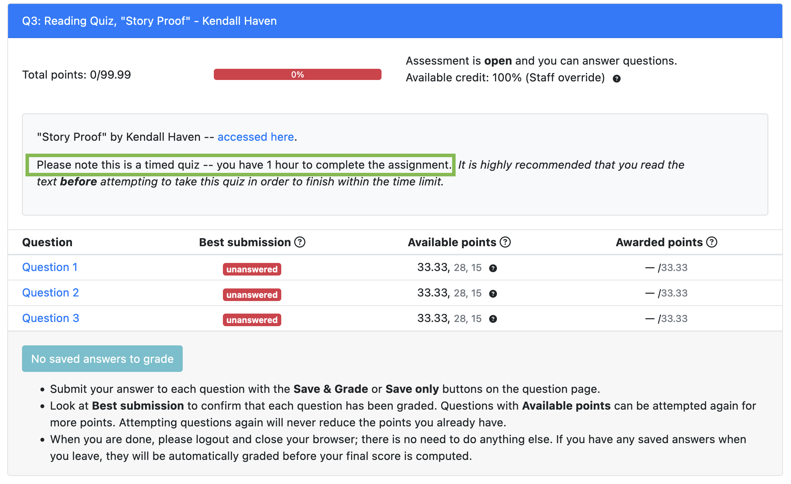

notes: welcome back!
notes: just a few more details about reading quizzes!
(This might be updated for True/False questions)
notes: right now its ~100%, 84%, 50% for each choice but we might update this for T/F questions since there are only true choices
same with multi-check boxes, we might update this to give you more tries, but we might just leave as it to keep it simple.
Stay tuned!

Each quiz has a 1 hour time limit.
notes: make sure you don’t click on the link on Canvas until you are ready to take the quiz!

notes: The link will be on Canvas like so with big bold letters telling you not to click until you are ready.

Full assessment list: https://us.prairielearn.com/pl/course_instance/157396
notes: If you want to see the full list of assessments, you can always click on the main PL course link at the top of the first few quizzes OR on the main “home page” of canvas.
stop for questions
We’ll first give you ~2 minutes to write down some notes/data about “your” name. Here “your” name can be your actual name, a nickname for you, the name of a pet, favorite place, etc.
Then we are going to break up into groups, where you’ll chat with each other about your name (or the name of a place, person, animal, etc that is meaningful to you).
Talk a little about your name. Does it mean something? Where does it come from?
Afterward, we’ll reconvene, allow for a few people to share a bit, and then we will break back out into our groups.
notes: set some timers for these things!
Now in your groups again, we want you to think about telling a story about names.
We will break back into groups and share this, and sketch out a handful of ideas.
Questions?
notes: go through and then ask if folks have questions
In your groups, we want you to think about telling a story about names.
We will break back into groups and share this, and sketch out a handful of ideas.
A few things:
And go! (Check out Miro link)
notes: go through and then ask if folks have questions